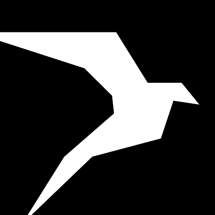

Hello, world! I'm a Full Stack Developer.
I am currently pursuing Masters of Science in Computer Science at Pennsylvania State University. I have experience as a Software Engineer in field of computer networking and fullstack development. I am skilled in C, C++, Python, Golang and AngularJS
=> "Middletown, PA"
$ Ved.education
=> "Pennsylvania State University"
$ Ved.major
=> "M.S. Computer Science"
$ Ved.expectedGraduation
=> "May 2021"
$ Ved.interests
=> ["Code", "Sketch", "Cook", "Hike", "Table Tennis", "SLEEP"]
$ Ved.workExperience.latest
=> Latest Work Experience
company: "Lavelle Networks"
role: "Software Engineer"
startDate: "May 2018"
endDate: "June 2019"
$ Ved.resume
=> "vedpatel.pdf"
Skills
C C++ Python Golang
Django Flask Ruby on Rails AngularJS
Linux/Unix Windows
Nessus Qualys Virtual Box Vagrant Wireshark Azure AWS
Résumé
Education
 Pennsylvania State University
2019-Present
Pennsylvania State University
2019-Present
M.S. Computer Science
Harrisburg, PA
 SRM Institute of Science and Technology
2014-2018
SRM Institute of Science and Technology
2014-2018
B.Tech. Computer Science and Engineering
Chennai, India
Work Experience

Lavelle Networks
May 2018 - June 2019
Software Engineer
Bengaluru, India
- Worked on networking stack for SDN Node
- Performance evaluation and improvement of the networking stack
- Packet Loss Ratio calculation for a path and using it alongwith other parameters to assess path quality
- Dynamic Path Selection for packets supporting application aware path selection, packet-by-packet load balancing at flow level.
- Developed Security module for the SDN Controller comprising of IDS and IPS
- Vulnerability Assessment and Penetration Testing of the system
- Developed a Windows NFV solution to internally run the SDN Node
- Mentored a team of interns and conducted training sessions for support team and new employees
- Maintained and established trusting relationships across teams
Lavelle Networks
December 2017 - April 2018
Software Engineer Intern
Bengaluru, India
- Created APIs for SDN Controller to manage and monitor the network over the internet
- Built reusable code and libraries for the SDN Controller for future use
- Implemented Role Based Access Control for the Controller.
- Scaled applications to support load changes
Projects & Fun
TCP Eyenet
Currently working on a TCP Congestion Control mechanism which utilizes a hybrid model of delay-based and loss-based congestion control.
Eyenet can switch between different mode of controls based on the current network conditions. Under high latency links delay based congestion
control performs very poorly as compared to traditional algorithms. In such cases Eyenet switched back to loss based algorithms.
Hyper Line
A Distributed Pipeline, which aims to provide an infrastructure to connect the hardware resources and divide
the ’pipelinable tasks’ into stages and process them in parallel and in order, synonymous to an assembly line of a software task.
Hyper Line GitHub Repo
Decision Tree Classifier
Designed and developed dataset independent C++ library for Decision Tree Classification and Random Forest Classification.
The accuracy provided by the library is at par and significantly efficient than python ML library SKLearn.
Decision Tree Classifier GitHub Repo
Reliable Networks using Flow based LB and Multiple WANs Built as a part of Senior Project at SRM Institute of Science and Technology. A framework for load balancing at parcel granularity over various low-bandwidth, low-quality wide territory organize joins. Achieved by building a collected association of WANs with execution properties comparative to that of a solitary high-bandwidth association
MesApp A web-app based messaging app with functionality of personal and group chats. It enables user to chat with registered users and also create groups. The searching is powered by ElasticSearch. It is used on the top of Eloquent ORM to ensure continuous searching service. MesApp GitHub Repo
Public Support A geolocation based public support system. We are attempting to bring all the basic public facilities under single platform like Police, Hospitals and Ambulances, Fire Department etc. It was developed at Save The Hacker hackathon organised by Freshdesk. GitHub Repo
Indian Science Congress Led the team for Design and Development of the Information System for Live Tracking and Streaming of Events, Registrations. Also, led the communication with higher authorities regarding product goals and progress made
Tic-Tac-Toe A tic-tac-toe game architected as a Web Service API using Google App Engine. Play Tic-Tac-Toe Tic-Tac-Toe GitHub Repo